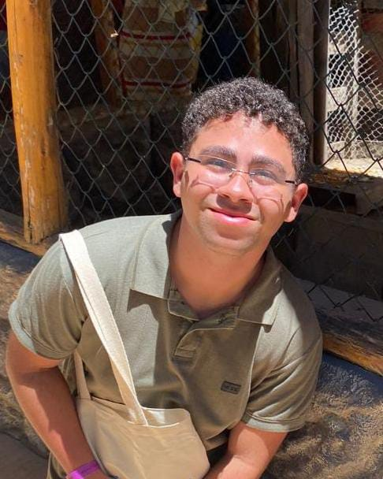
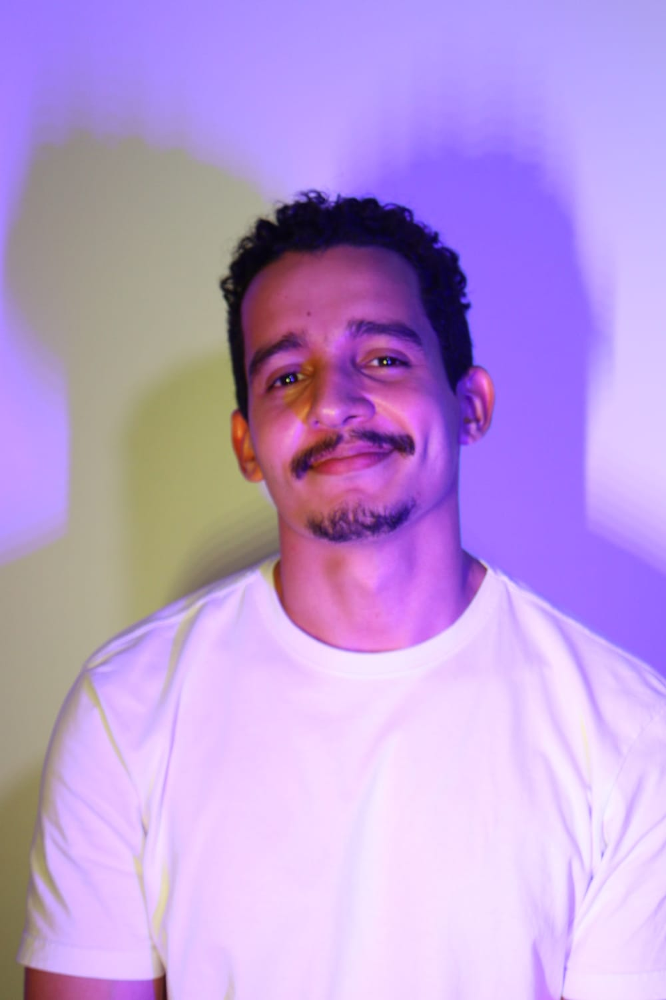
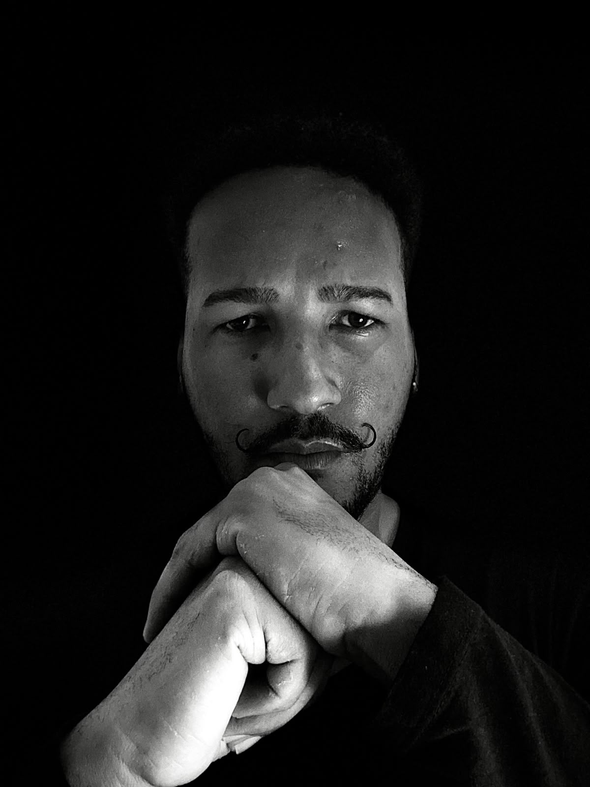
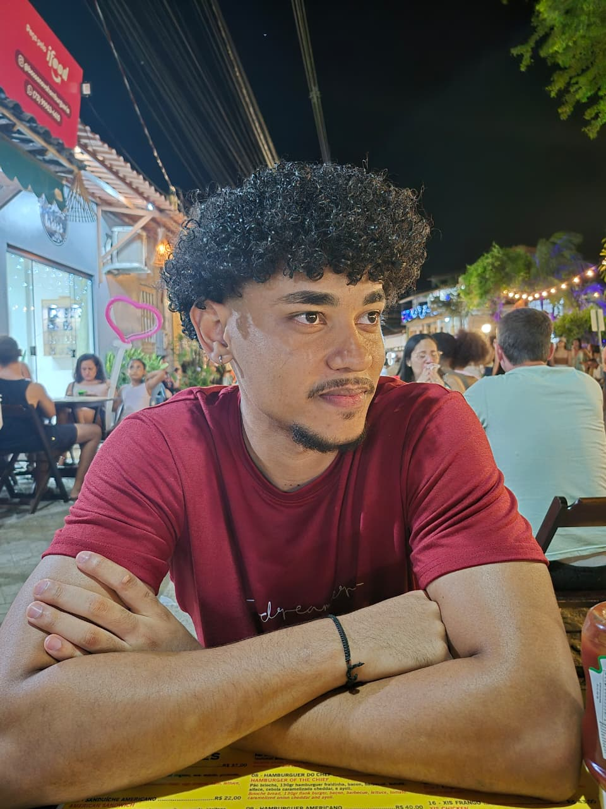
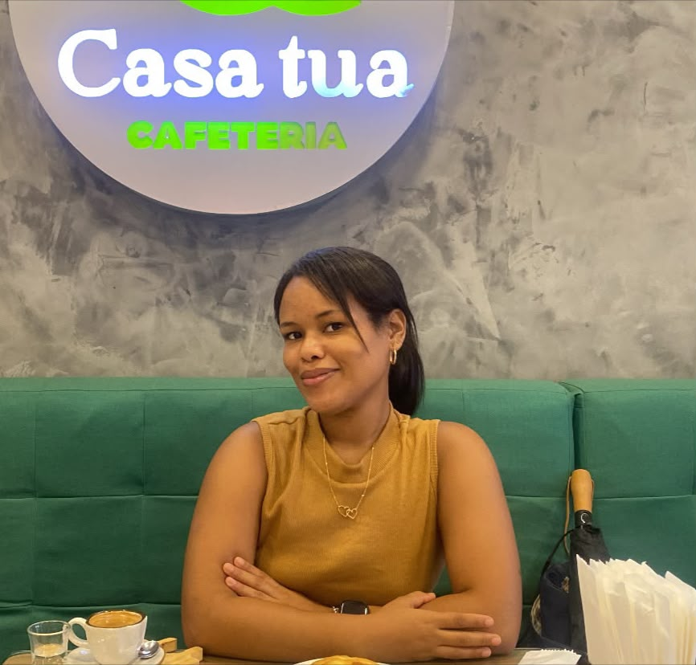

01Juan Pablo
Backend · APIs · IoT
Egresso do EmbarcaTech e pesquisador no CDC/UESC, atua no backend de experimentos remotos com APIs, bancos de dados e WebRTC. Também participou da Plataforma Cacau e de maratonas ICPC.
Cinco pessoas, muitas ideias e um destino em comum: imaginar novas formas de descobrir a Costa do Cacau. Unimos tecnologia, dados e criatividade para criar novos caminhos para a região.
Somos a Rota 404, cinco estudantes da Universidade Estadual de Santa Cruz (UESC) reunidos pelo Hack Turismo Costa do Cacau. Nosso time combina desenvolvimento de software, sistemas embarcados, Internet das Coisas, análise de dados e infraestrutura de TI.
Com experiências em pesquisa, extensão e saúde digital, trabalhamos em diferentes etapas da criação de tecnologia: da prototipagem de hardware à construção e operação de soluções de software. Nosso nome lembra que, quando uma rota não aparece, podemos encontrar um novo caminho.
Conheça as pessoas e competências que compõem essa jornada.

01Egresso do EmbarcaTech e pesquisador no CDC/UESC, atua no backend de experimentos remotos com APIs, bancos de dados e WebRTC. Também participou da Plataforma Cacau e de maratonas ICPC.

02Egresso do EmbarcaTech e pesquisador no CDC/UESC, trabalha com prototipagem de hardware e sistemas embarcados para experimentos físicos controlados remotamente. Participou da Plataforma Cacau.

03Integrante do PET-Saúde Digital, contribui com desenvolvimento backend, análise de dados e aprendizado de máquina.

04Integrante do PET-Saúde Digital, atua no desenvolvimento Full Stack e na infraestrutura de TI, ajudando a construir e manter soluções completas.

05Trabalha com desenvolvimento de software, análise de dados, automação, Docker e redes. Participou da Plataforma Cacau e de maratonas de programação ICPC.